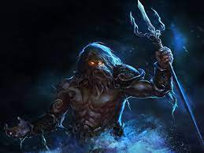
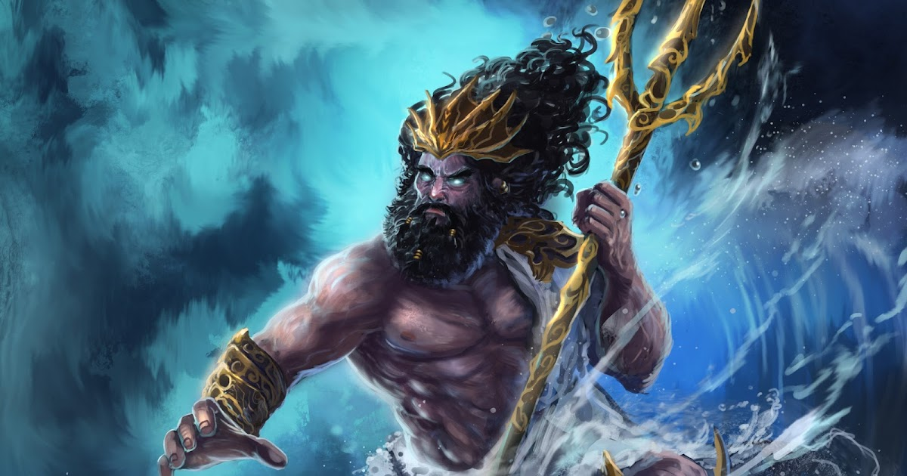

Galeria




Poseidon é uma das figuras mais proeminentes da mitologia grega, sendo o deus dos mares, dos terremotos e dos cavalos. Filho dos titãs Cronos e Réia, ele faz parte dos Doze Olímpicos, os principais deuses do panteão grego. Poseidon é frequentemente retratado como um deus imponente e poderoso, governando sobre as profundezas oceânicas e as tempestades marítimas.
Pedro Henrique - 11 98318-9973
Um amadeirado oriental terroso, clássico, com estilo vintage ao fundo. Um perfume que se conecta com o aroma da terra e suas raízes e com um mundo que busca estar mais conectado ao planeta. O perfume traz o tabaco como uma das notas...